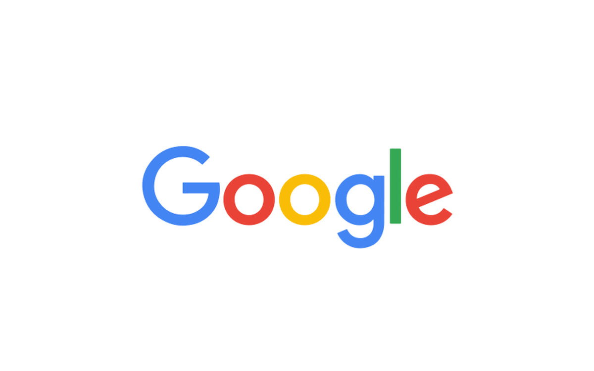
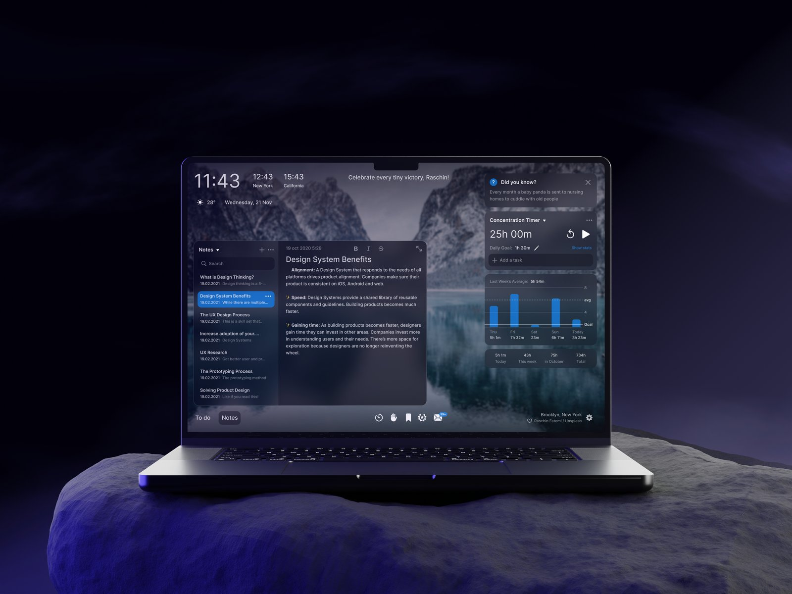

Hey,
Fun factI got roasted at a Tech Roast Show in front of 500+ people.
scratch to reveal ↗
I’m Malaika, a product designer specialising in human-AI interactions. Designing for the coming decade of AI adoption, deciding how much autonomy to allow models, when to share reasoning and how to earn the trust of the human will define the nature of these interactions.
Most recently at Google, prev at Cresta, Gan.ai
designing for the coming decade of AI-human interactions ⊹
Experience

Designing AI interactions across Google's enterprise CRM and the Workspace products people use every day. Work is under NDA, happy to do a walkthrough on a 1:1 call. Product Designer
Designed Cresta Coach, an AI-powered coaching workflow that pulls scoring, planning, and progress tracking into one place, letting managers run 4x more coaching sessions without added workload. Product Designer
Designed the website for a frontier AI research lab building audio-native models that listen, reason and speak - one of four teams selected under the IndiaAI Mission. Ongoing UX consulting and web design with the founders from my Gan.ai days. UX Design Consultant

Redesigned the onboarding and registration flow for a productivity Chrome extension that was losing 81.79% of users in their first session, building a design system to support it going forward. Product Designer
Founding designer on a generative-video AI platform, owning the product from 0 to 1: prototype to Fortune 500-scale pilots and a $5.25M seed round. Founding Product Designer
Rediagnosed checkout drop-off as a cost-transparency problem and rebuilt around real-time pricing clarity, lifting mobile conversion 45%. Product Designer
A redesign of The Swaddle's website, bringing its independent journalism into a bolder, more expressive reading experience. Independent UX Case Study
A smartwatch and mobile system that helps you stay with a task by removing constant time checks, while still building a feel for how long things actually take. UX/UI, Visual & Motion Design
A little about me
Most of what I design lives at a boundary that didn't exist a few years ago: the line between what a model decides on its own and what it hands back to a person. Get that line wrong, and people either stop trusting the tool or stop thinking for themselves. Get it right, and the tool disappears into the work.
I've spent over six years finding that line at three very different scales. As the founding designer at a generative-video startup, figuring out its interaction model from nothing. Inside an enterprise contact-center product built on millions of real conversations. And now at Google, designing AI across a seller's entire CRM, the inbox included, for thousands of people a day.
I studied Human-Computer Interaction Design at the School of Visual Arts, and I still think about design the way that program taught me to: as a series of judgment calls, not a style. These days most of my judgment calls are about autonomy: when to let a model act, when to make it explain itself, and when to just get out of the way.
I'm based in San Francisco.
Say hello
An idea, an opportunity, or just to say hi. My inbox is open.